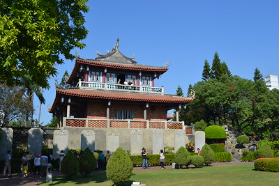
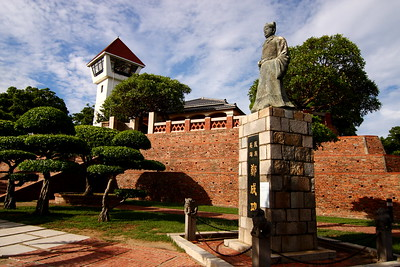
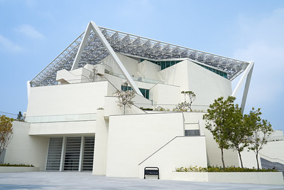

Chihkan Tower

Chikan Tower or Fort Provintia was built in 1653 during the Dutch colonization. It was first built as an defensive administrative center of Tainan. When the Dutch lost the war to Zheng Cheng gong, it was later used as a place to store gun powder for the Zheng dynasty. The fortress was damaged through the era due to wars and earthquakes and the fortress you see now is mostly repaired by the Japanese when the used the place as a hospital. Nowadays it is just a historic site for people to understand the history of Tainan.
Anping Castle

Anping Castle, also know as Fort Zeelandia was built in 1634 as a trading center. When the Qing dynasty took over Taiwan, the castle gradually lost it's use and soldiers used the bricks of the castle to build the Eternal Golden Castle. Anping Castle was later repaired by the Japanese and is now also a historic site. Around the Anping castle is the Anping Old Street where a lot of traditional food and souvenirs are sold.
Chimei Museum
The Chimei Museum was first established in 1992 but then moved to the location now in 2014. The museum displays arts, natural history, fossils, arms and armours, musical instruments, and sculptures. It also has European paintings from the 13th to 20th century. Something special about the museum is that there are the statues of the Greek Gods outside the museum. In addition, when the museum is closed at night, the lights are not. It really is a romantic place to go when it is dark.
Tainan Art Museum Building 2

The Tainan art Museum consists of 17 galleries. It was a museum that was designed by Japanese and Taiwan designers and architects. Because of the structure Something special about this museum was that it was once a parking lot and gym. However, it was finally established into a arts museum on January,2019.